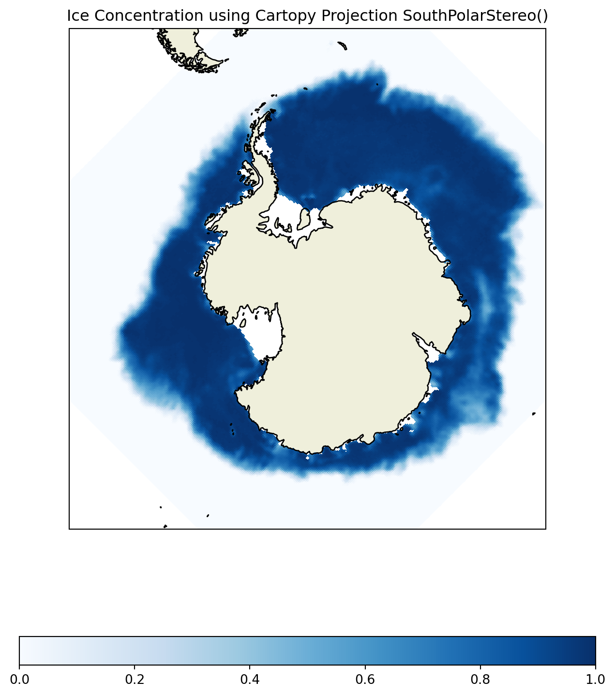
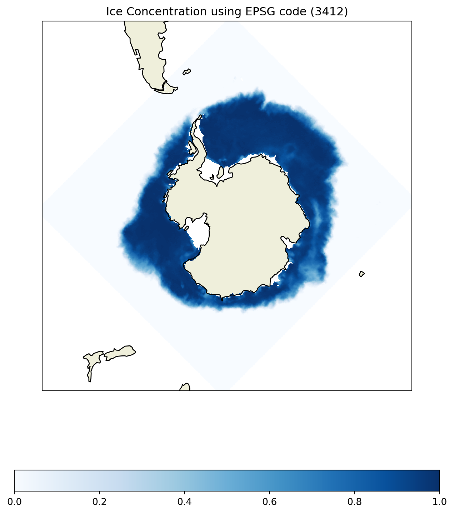
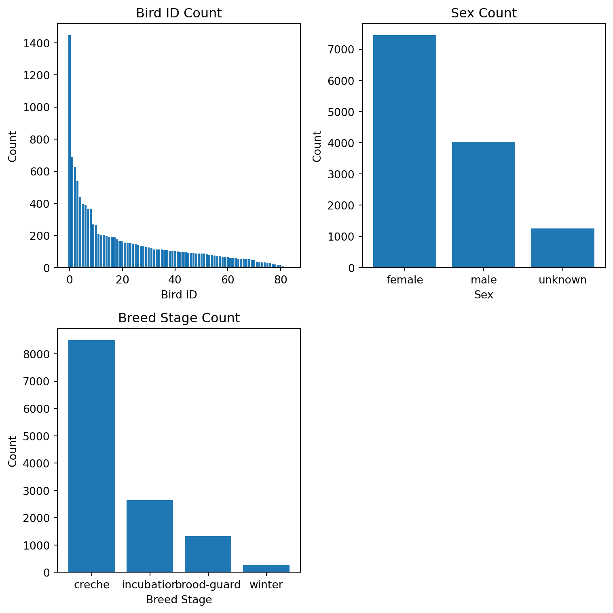
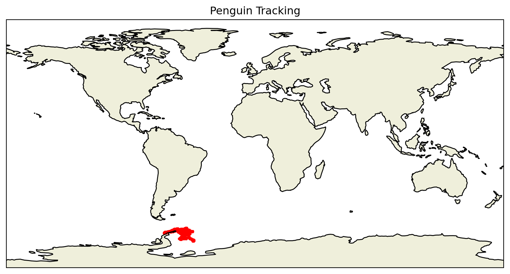
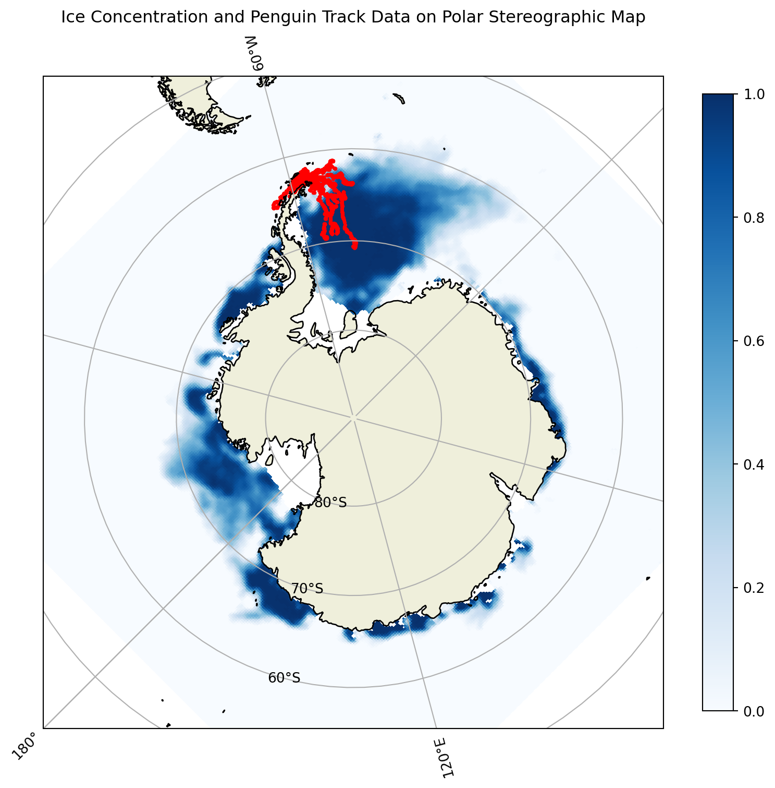
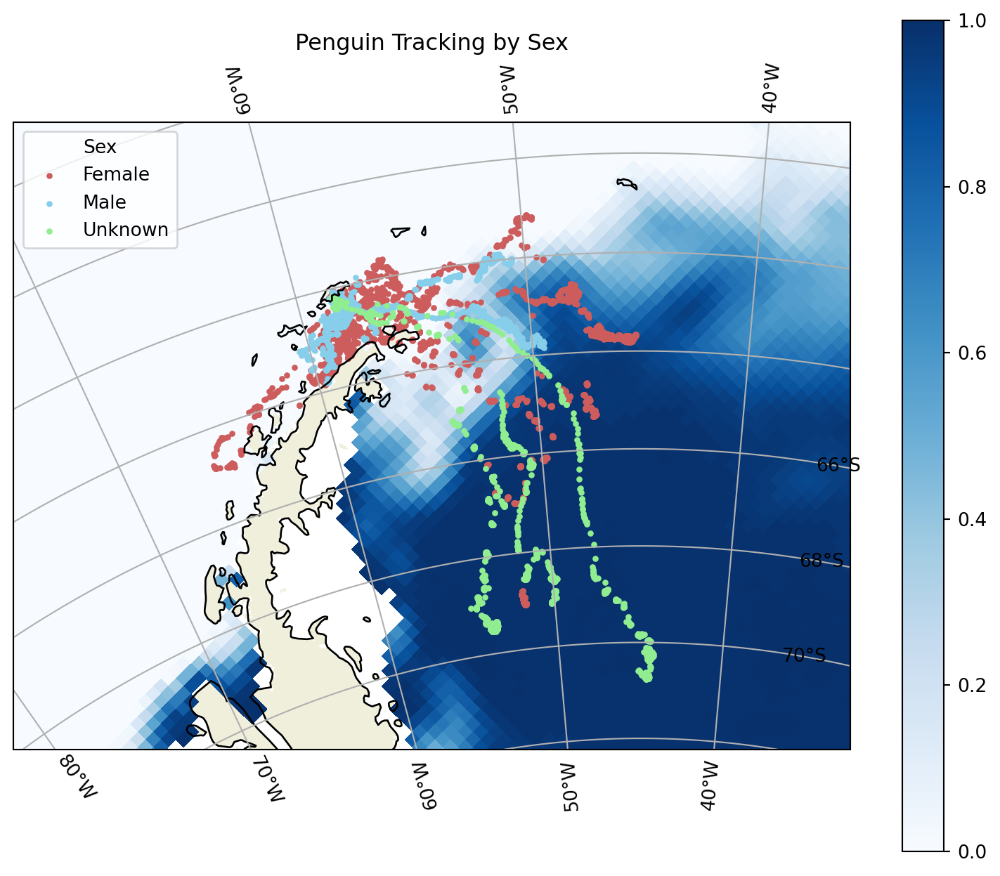
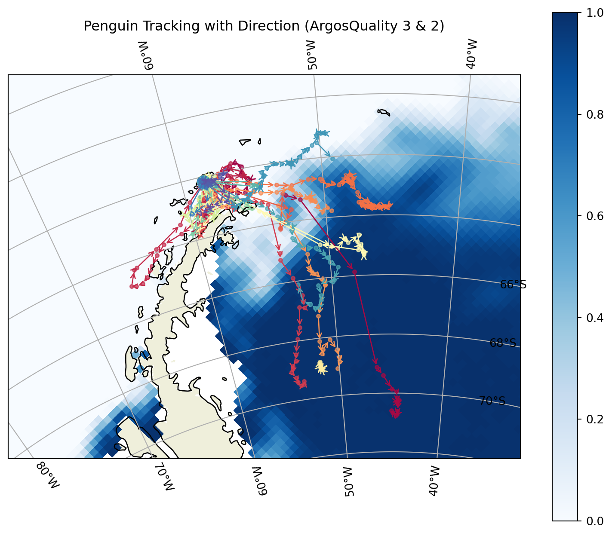
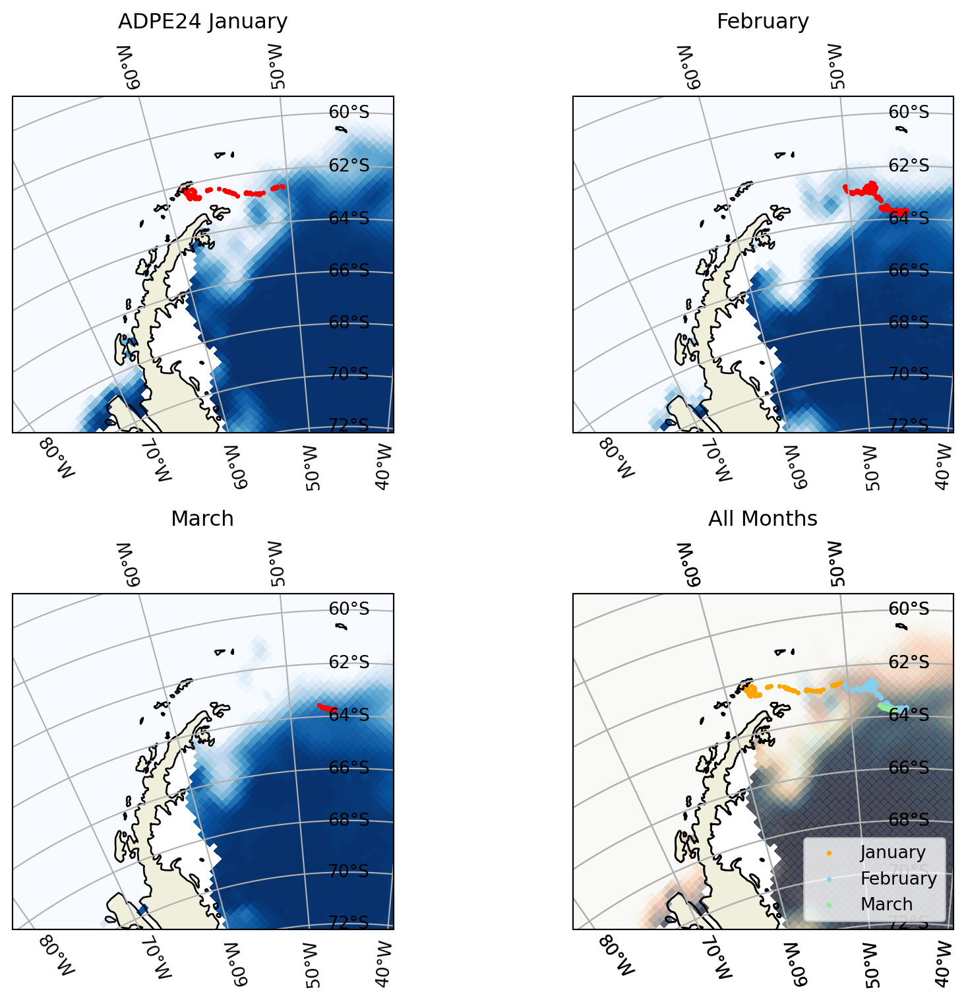

Sea Ice Concentration and Animal Telemetry
Geospatial Data Analysis
Statistics
Python
Analysis of Sea Ice Concentration and Animal Telemetry in the South Pole Region
The surface of Antarctica is largely covered by sea ice, and its area changes over time. This project aims to explore how these changes are related to the movement patterns of penguins, one of the continent’s representative species, as seasonal variations in sea ice may impact their behavior and migration patterns.
Sea Ice Concentration Data
Sea Ice Concentration data was obtained from the NOAA Polar Watch ERDDAP Data Server and NetCDF format data was used in this project. This data includes time, coordinates, and Sea Ice Concentration data.
Data and its details can be accessed through the link below.
- https://polarwatch.noaa.gov/erddap/griddap/nsidcG02202v4shmday.html
South Polar Projections
There are methods to represent the spherical Earth on a flat surface. Using the two projection methods below, the South Polar region of the data used here can be displayed on a flat map.
I. Polar Stereographic Projection
The Polar Stereographic Projection is a projection method centered on the polar regions.
In this case, it is centered on the South Pole.
Details about the Polar Stereographic Projection can be found from the link below.
- https://nsidc.org/data/user-resources/help-center/guide-nsidcs-polar-stereographic-projection
The blue areas in the map above represent Sea Ice Concentration, and the concentration levels can be referenced using the color bar.
II. EPSG Code 3412
Another projection method is to use a location-specific EPSG code. The EPSG code for the South Pole is 3412, and the map below shows the projection using this code.
Other EPSG Codes can be found from the link below.
- https://epsg.io/

Adelie Penguin Telemetry Data
Adelie Penguin Telemetry Data was obtained from NOAA NCEI and can be accessed through the link below.
- https://www.ncei.noaa.gov/node/6696
| BirdId | Sex | Age | Breed Stage | DateGMT | TimeGMT | Latitude | Longitude | ArgosQuality | |
|---|---|---|---|---|---|---|---|---|---|
| 0 | ADPE1 | female | adult | incubation | 28/10/1997 | 7:54:00 | -62.171667 | -58.445000 | 2 |
| 1 | ADPE1 | female | adult | incubation | 28/10/1997 | 9:32:00 | -62.173333 | -58.463333 | 2 |
| 2 | ADPE1 | female | adult | incubation | 28/10/1997 | 18:15:00 | -62.158333 | -58.426667 | 1 |
| 3 | ADPE1 | female | adult | incubation | 28/10/1997 | 19:57:00 | -62.175000 | -58.441667 | 2 |
| 4 | ADPE1 | female | adult | incubation | 28/10/1997 | 21:37:00 | -62.171667 | -58.445000 | 2 |
The table above shows a sample of the Telemetry Data.
The Distribution of Penguins

The distributions are shown above to better understand the data, allowing for further analysis based on different categories.
Penguin Locations on the Projected Map
The locations of penguins on Earth are shown as follows.


Penguin Tracking Considering Various Factors

The plot above shows the daily movement paths of penguins by sex, illustrating the differences in movement patterns between sex groups.

The plot above shows the daily movement paths, including direction, filtered only to include data with Argos Quality of 3 and 2, which indicate data accuracy.
Note:
- Argos Quality 3 - an error of less than 150 meters (with 4 or more messages)
- Argos Quality 2 - an error between 150 and 350 meters (with 4 or more messages)
Monthly Tracking with Sea Ice Concentration
Bird ID ADPE24 (Female)
The individual with the most data is used as a representative example below, and its paths over time are shown with the corresponding sea ice concentration below. This can show the relationship between Sea Ice Concentration and penguin movement patterns.

As shown above, ADPE24 has data from January to March 2003, and it traveled from the island towards areas with higher sea ice concentrations. The sea ice concentration varies by month, and it is clear that ADPE24 follows these changes. Although this is just one sample, it suggests that there is a relationship between sea ice and penguin movement patterns.
Modified: Oct 10, 2024.